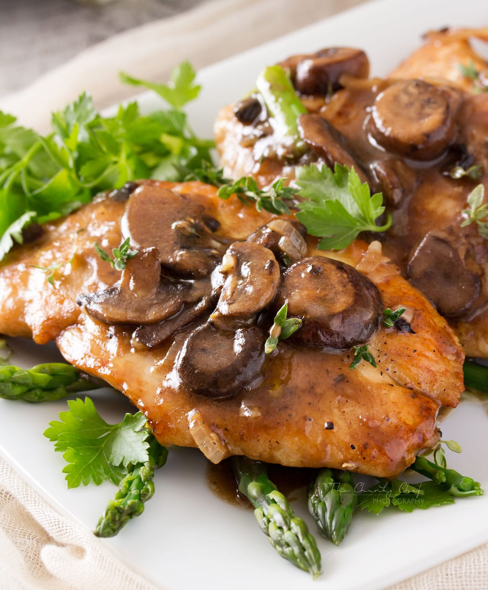

Chicken Marsala (with Creamy Marsala Sauce)
Chicken Marsala with a creamy sauce! This classic Italian-American chicken recipe includes tender, perfectly pan seared chicken cutlets, and flavor enhancing browned mushrooms, and it’s all covered with a richly seasoned marsala wine, garlic and herb sauce.

Ingredients Needed to Make Chicken Marsala
- boneless skinless chicken breasts
- salt and pepper
- all-purpose flour
- unsalted chicken broth
- dry marsala wine
- unsalted butter
- olive oil
- cremini (baby bella) mushrooms
- garlic
- fresh thyme, oregano and parsley
- heavy cream
- cornstarch
How to Make Chicken Marsala with Creamy Sauce
- Reduce marsala wine and broth: Add marsala wine and chicken broth to a medium saucepan. Heat over medium-high heat, bring to a boil, then reduce heat slightly and let gently boil until reduced to 1 cup, about 15 minutes.
- Prepare chicken cutlets: Meanwhile in season both sides of chicken with salt and pepper. Dredge in flour.
- Cook chicken through in skillet: Melt 1 Tbsp butter with 1 Tbsp olive oil in a 12-inch skillet over medium-high heat. Add chicken pieces and let sear until cooked through (165 in center), turning once halfway through, about 10 – 12 minutes.
- Set chicken aside, keep warm: Transfer chicken to a plate. Tent with foil.
- Saute mushrooms: Reduce burner temperature to medium heat. Melt remaining 1 Tbsp butter with 1 Tbsp olive oil, add mushrooms. Saute mushrooms, just tossing occasionally, until golden brown, about 8 minutes. Add garlic during last 1 minute of sautéing.
- Add reduced liquids and seasonings, thicken sauce: Remove pan from heat then pour in marsala reduction, thyme, and oregano. Return to heat, bring to a simmer then stir in cornstarch chicken broth mixture. Stir until thickened.
- Stir in cream, season sauce: Off heat stir in heavy cream, season sauce with salt and pepper to taste.
- Add sauce to chicken, garnish: Return chicken breasts to pan, spoon sauce over top. Sprinkle with parsley and serve immediately.
Nutrition Facts
Amount Per Serving:
Calories 448;
Fat 24g 37%;
Saturated Fat 10g 63%;
Cholesterol 133mg 44%;
Sodium 200mg 9%;
Potassium 944mg 27%;
Carbohydrates 11g 4%;
Fiber 1g 4%;
Sugar 3g 3%;
Protein 33g 66%;
Vitamin A 617IU 12%;
Vitamin C 5mg 6%;
Calcium 45mg 5%;
Iron 2mg 11%.